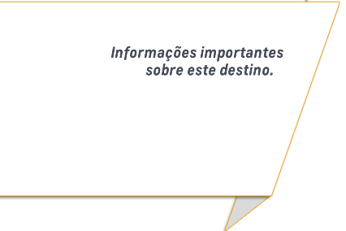

|
Embarque internacionalChegue ao Aeroporto Internacional de Guarulhos com quatro horas de antecedência a seu voo. Documentação e vistoPassaporte Certifique-se que seu passaporte esteja com validade de até 1 (um) mês (da data de retorno ao Brasil) e com pelo menos 2 (duas) páginas em branco, sem carimbo. Estas páginas serão usadas pelas autoridades locais e sem elas não é possível embarcar. Cada estado tem um tempo de espera diferente. Se você for portador de passaporte de outras nacionalidades, precisará também do RNE (Registro Nacional de Estrangeiros) para embarcar. Visto No embarque com destino à África do Sul cidadãos brasileiros não precisam de visto de entrada para permanência de até 90 dias. Atenção: Não são aceitas cópias dos documentos, ainda que autenticadas.
VacinaPara embarcar à África do Sul, a vacinação contra a febre amarela é obrigatória e deve ser feita no mínimo dez dias antes da viagem, caso contrário o embarque não será permitido. A vacina tem validade de dez anos e deve ser novamente administrada até o fim desse período. O Certificado Internacional de Vacinação tem comprovante de cor AMARELA. Contraindicações: a vacina é contraindicada a gestantes, imunodeprimidos (pessoas com o sistema imunológico debilitado) e para alérgicos à gema de ovo. Em alguns artigos na internet, você encontrará textos sobre o risco de Malária e Cólera na África, recomendando medicamentos que deveriam ser tomados de forma preventiva.
Vacinação
Emissão do Certificado InternacionalPara viagens internacionais você precisará do CIVP - Certificado Internacional de Vacinação, que pode ser emitido em algum dos Centros de Orientação ao Viajante. Não deixe para última hora. Entre no link abaixo e escolha o endereço mais próximo.
A emissão do CIVP pela autoridade sanitária estará condicionada à assinatura do viajante no ato, sendo imprescindível sua presença.
Não há qualquer recomendação nesse sentido.
Sim, qualquer medicamento pode provocar reações adversas. A vacina pode causar dor de cabeça, febre e mal estar em algumas pessoas.
Não há problema de interação medicamentosa entre a vacina e outros medicamentos, qualquer que seja o remédio.
Não é recomendável neste caso e depende de avaliação médica.
Nessas condições citadas não existem contraindicações para a vacinação.
Não pode, pois há contraindicação para a vacinação em gestante.
A vacina tem cobertura total de 10 anos. No entanto, não há problema em repetir a vacina caso faltem apenas dois meses para vencer o prazo de validade.
Sim, caso o país para o qual elas se dirigem exija a vacinação. Para o embarque à África do Sul a vacina é obrigatória e deve vir acompanhada do CIVP – Certificado Internacional de Vacinação e Profilaxia.
Sim.
Depende da organização dos serviços em cada município e em cada cidade. Em alguns hospitais há salas de vacinas, mas em geral a vacinação é feita nas unidades básicas de saúde da família. Algumas companhias áreas solicitam no ato do check-in um atestado médico no qual esteja declarado o estado geral de saúde da gestante, tempo de gestação, bem como autorização para a viagem. Se este é seu caso, providencie o atestado e o mantenha com você até o fim da viagem. A vacina contra febre amarela é contraindicada para gestantes e obrigatória para quem viaja à África do Sul. Portanto, premiadas e acompanhantes gestantes só poderão viajar caso tenham tomado a vacina antes de terem ficado grávidas. Objetos importantes a declararAtenção: A nova Instrução Normativa RFB n.◦1059, datada em 02 de agosto de 2010, exclui a necessidade de declaração para a saída temporária de câmeras fotográficas, celulares e computadores de uso pessoal compatíveis com as circunstâncias da viagem. Estas informações estão sujeitas a alterações conforme determinação da Receita Federal. Assentos no avião Algumas empresas aéreas não têm facilitado a marcação de assentos de grupos com antecedência.
Moeda e câmbioA moeda oficial é o Rand Sul-Africano (ZAR). O câmbio é de aproximadamente: USD 1,00 = 10,98 ZAR. BRL 1,00 = 4,63 ZAR. Cartões de crédito ou débito internacionais são bem aceitos na grande maioria dos estabelecimentos comerciais da África do Sul, mediante apresentação de documento com foto. Sempre que você for fazer câmbio será necessário apresentar o passaporte original. Atenção: Quando se paga em dólares ou euros, a maioria dos estabelecimentos comerciais devolve o troco em Rand. O real não é aceito na África do Sul. *As taxas de câmbio foram verificadas em 07 de fevereiro de 2014 e estão sujeitas às alterações diárias. Compra de moedas estrangeiras Para compra de moedas estrangeiras, dirija-se a uma agência bancária que tenha operação de câmbio, portando CPF.
Para sua comodidade e segurança você pode adquirir um cartão de débito internacional conhecido no mercado como “Travel Money”. Esse é um cartão pré-pago, recarregável, utilizado em compras e saques na moeda local para despesas pessoais durante viagens ao exterior. É uma maneira moderna e segura de levar dinheiro. Para aquisição desta facilidade, procure o banco no qual é correntista ou casas de câmbio.
Bagagem - identificação e limitesLembre-se de colocar as etiquetas para identificação de sua bagagem. Use-as em local visível e de difícil remoção. Identifique todas as suas malas. Os limites de bagagem variam de acordo com a companhia aérea e o destino. Não haverá cobrança de excesso de bagagem até os limites descritos abaixo. Acima desses limites todo excesso será cobrado do passageiro pela companhia aérea no ato do embarque, tanto nos voos internacionais quanto nos voos nacionais. Voos internacionais Nesta viagem cada passageiro em classe econômica tem direito a despachar dois volumes de até 32 Kg cada, com no máximo 158 centímetros de dimensão (some altura, largura e comprimento). O peso maior de uma mala não compensa o menor de outra. Voos nacionais no Brasil
Recomendamos que você leve em sua bagagem de mão uma troca de roupa para eventuais emergências. Para o voo separe um agasalho, pois a temperatura dentro do avião costuma ser fria. TemperaturaEm abril a temperatura na África do Sul varia entre 11ºC (à noite e de manhã bem cedo) e 22ºC (durante o dia). Fazendo as malas Sua viagem está com várias programações de passeios e caminhadas, por isso traga roupas e calçados confortáveis, como tênis ou sapatos com sola de borracha. Em função da temperatura mínima local, coloque agasalhos em sua mala. No hotel em Sun City há um parque aquático com uma das maiores piscinas de ondas do mundo. Prepare o traje de banho. Para os eventos noturnos sugerimos trajes esporte fino. Em nosso jantar de boas-vindas no restaurante Pigalle prefira roupas elegantes, não utilize jeans ou tênis.
Dicas úteis para os safaris:
Fuso horárioEm abril na África do Sul estaremos cinco horas à frenteem relação ao horário de Brasília. Idioma A África do Sul tem onze idiomas oficiais, e o inglês é um deles. Valores e passaporte Sugerimos que todos os valores e documentos sejam guardados no cofre do quarto do hotel, sem custo adicional. Convém carregar sempre uma cópia das páginas 1, 2 e 3 do passaporte e um documento com foto, como RG e CNH. Leve o passaporte original somente se for fazer câmbio. Guarde também no cofre uma cópia de seu cartão de crédito. Aparelhos elétricos A voltagem na África do Sul é 220 v 50 Hz. As tomadas são para entrada de três pinos redondos. Caso tenha aparelhos com pinos retangulares ou com o novo padrão de tomadas brasileiras, leve um adaptador de tomada de dois pinos redondos. O Hotel The Palace possui, nos quartos, tomadas de dois pontos, como as que utilizamos no Brasil (sem o terceiro pino). Já no banheiro a tomada disponível aceita os dois pinos redondos e dois pinos chatos.
Chamadas telefônicas para o Brasil 00 + 55 + código da cidade + nº do telefone desejado Podem ser feitas do quarto, discando-se o “0” para abrir a linha local e em seguida os números indicados, porém o custo deste serviço no hotel é bem alto. Ligações “a cobrar” para o Brasil : 0800 99 0055 Essas ligações podem ser feitas de qualquer telefone público com atendimento em português. Ligações feitas do quarto estão sujeitas às tarifas cobradas pelo hotel. Celulares: Serviços extrasTelefonemas, frigobar, lavanderia ou quaisquer outros consumos extras deverão ser quitados diretamente pelo hóspede no check- out. Estes itens não estão incluídos no valor da diária. Refeições e bebidas As refeições e bebidas servidas durante sua viagem foram escolhidas e pré-determinadas e estão incluídas no programa. Refeições e bebidas fora da programação definida são de responsabilidade de cada premiado. Leis alfandegárias no Brasil É permitido por lei aos brasileiros, na ocasião do retorno ao Brasil, trazer do exterior até US$ 500 em mercadorias importadas com isenção de taxas.
www.receita.fazenda.gov.br/Legislacao/Ins/2010/in10592010.htm ATENÇÃO: Estas regras estão sujeitas a alteração sem prévio aviso. Free Shop no Brasil Além de US$ 500 (por pessoa), permitidos com isenção de taxas para compras no exterior, você poderá adquirir mais US$ 500 no Free Shop do Brasil. Caso a cota das compras no exterior não tenha sido totalmente utilizada, não poderá ser somada a do Free Shop. Atualmente existem algumas restrições para compras no Free Shop:
ATENÇÃO: Estas regras estão sujeitas a alteração sem aviso prévio. Todos os convidados estão cobertos por seguro de assistência médica para eventuais problemas de saúde. Caso necessite de cuidados médicos, informe ao guia G.I, que providenciará a assistência necessária. |
||||
|  | |||||